趁著假日來趕一下進度，於是把我看過的 ClojuTRE 2016 心得/筆記紀錄在這邊。
嗯……其實 ClojuTRE 2016 每一場演講我都看完了…..
當然，我並不是每一場都聽的懂，於是這筆記只能僅供參考，請勿盡信 orz…
有些演講真的很難畫重點，還是挑自己有興趣的看吧!!
Using Clojure to provide computerized psychotherapy
講者投影片: 下載連結
這場演講在講 Clojure 用於心理治療 (psychotherapy) 上，一開始講者提出了問題:
對於這些問題，我們可以有一些解法:
而更多的問題，則是沒有足夠的人手在心裡治療上，因此講者提到了可以透過電腦來協助，點子來自於 treatment manuals
而 網路認知行為治療 (iCBT, internet-based Cognitive behavior therapy) 則大部分提供了如上面的那樣的自我治療(sel-help)資訊，這種方式減少了一些問題，比如治療師(therapist)和病患之間的距離
然後後面講者繼續講了一些問題，解法一是用 Clojure 寫了些網頁程式….(嗯，看影片吧) ，而這網頁程式透過 Luminus framework 製作，值得一提的是講者第一個學的程式語言就是 Clojure。
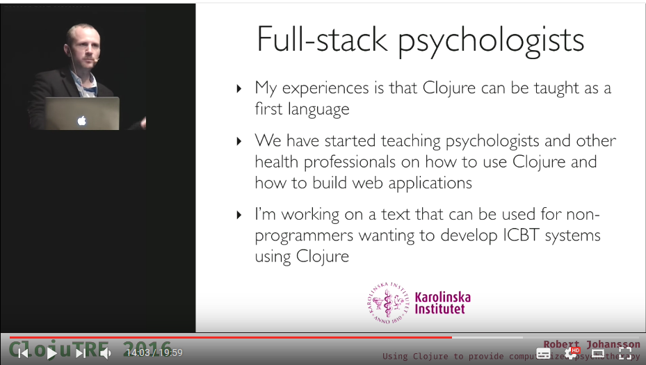
The Universe As A Value
投影片: 下載連結
這場演講第一次聽的時候我傻眼了，於是就再聽了第二次。
講者一開始先稍微講了些關於宇宙 (Universe) 的事情，然後導向愛因斯坦的相對論，我們可以假設有一個觀察者如下
(def observer (atom {:universe u :time t}))
而愛因斯坦說過，時間和觀察者是相對的 (time is relative to observer)，兩個不同的觀察者會看到不同的宇宙 (Universe)，也就是說，有許多不同的宇宙(Universe)存在。
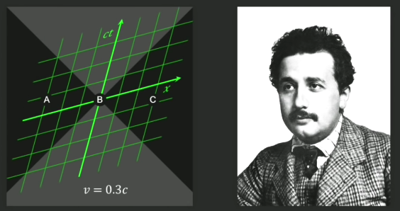
我們可以定義 𝕌 這個符號為所有可能可以觀察到的宇宙空間(𝕌 is the set of all possible observable universes)，因此，我們就可以定義 Clojure 程式用來選擇下一個 Universe。
(defn next-u "Given an observed universe u, return a possible 'next' universe." [u t] (rand-nth (filter #(consistent? % u t) 𝕌)))
而下一個程式碼，則是讓一個觀察者 (observer) 切換到另外一組 Universe 去
(defn switch-universe! "Put the given observer in another universe" [observer] (swap! (fn [{:keys [universe time]}] {:universe (next-u universe time) :time (inc time)}) observer))
而我們可以這樣執行我們的觀察者:
(defn run-observer "Run the observer, giving them the impression of passing time" [observer] (dorun (iterate switch-universe! observer)))
接下來接到了 Pump-probe technique ，嗯…我不知道他在講啥 (摀臉)….所以只好秀一下他接下來的投影片:
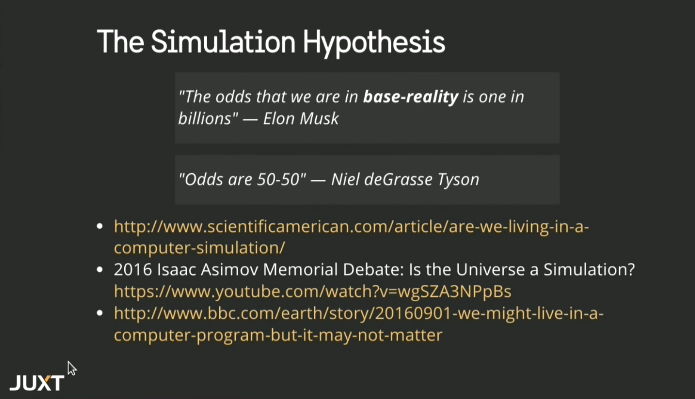
接下來話鋒一轉，突然變成說…在 ClojureScript 中，無論是 Om 或是 Reagent, 我們都有一個地方定義 app state (universe)
;; The app 'universe' (def app-state (atom {:drawer {:items [{:name "ear-plugs"}]} shopping {:items [{:name "Coffee" :quantity 2} {:name "Milk" :quantity 2} {:name "Bird seed" :quantity :lots}]}}))
接著我們就可以用 deref 去查看我們的 Universe (app state)
(deref app-state) ;; or @app-state
而在這種狀況下，我們滿足了以下兩種規範:
Consistency
In the render phase, the value we render is constant
Concurrency
We can take our time, nobody is waiting for us!
這種 app-state 的形式和物件導向 (Object Orientation) 是不同的，我們知道物件導向是這樣的:
Object Orientation: Lots of changing state, scatered around.
講者舉 https://juxt.pro/ 為例，這個網站有很多 state 要去處理，因此我們可以做一個 record 去弄這些 state
(defrecord AppState [data-sources] clojure.lang.IDeref (deref [this] (skup/refresh! this) ;; Return the 'universe as a value' )) ;; Skippy McSkipface: https://github.com/juxt/skip
接下來我們就可以對這些 state 進行 derefernece 的動作
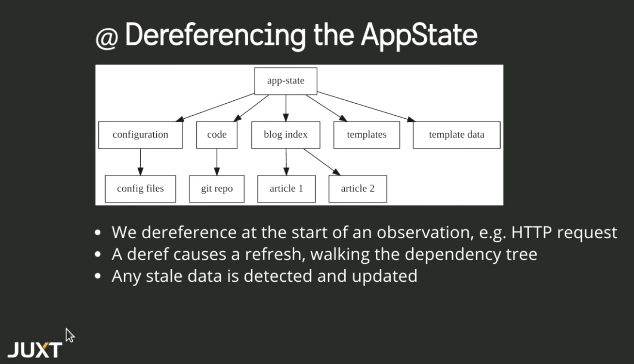
那要怎樣提昇 referesh 的效能呢?我們可以透過這些支援 time-travel 的工具來進行:
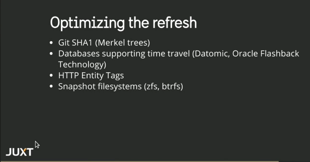
而在開發環境，則可以透過 background watchers 來對資料進行更新的動作
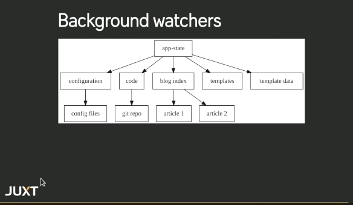
而這樣做，講者提出了一個結果:
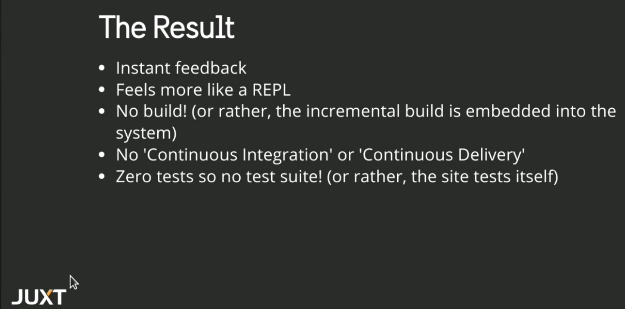
嗯…我必須承認我聽了兩次還是聽不太懂 = =
最後講者對比了一下 C 和 Lisp:
It seems to me that there have been two really clean, consistent models of programming so far: the C model and the Lisp model.
– Paul Graham
"You're not constructing it like making a tone of source code and compiling it periodically, you're constructing it the way you construct a city: build some of it, it's running all the time, so it's kind of like a live programming language."
– Dick Gabriel On Lisp, Software Engineering Radio Episode 84
Native mobile apps with ClojureScript
終於有看到一場在講 react-native 作用於 ClojureScript 上的演講！！ 這之前我有稍微玩過，但沒認真寫這樣的程式。
關於 ClojureScript 作用在 react-native 上的資料，可以到 http://cljsrn.org/ 去找，或是 Clojurians 的 Slack #cljsrn 頻道。
這場演講先從 react-native 開始介紹，說明它和 Cordova/HTML5 的不同:
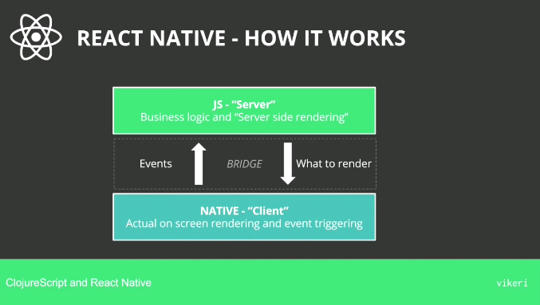
接下來則是以開發者的觀點來看 react-native，一個基本的 react-native 程式長這樣:
import React, { Component } from 'react'; import { Text, View } from 'react-native'; class WhyReactNativeIsSoGreat extends Component { render() { return ( <View> <Text> If you like React on the web, yoou'll like React Native. </Text> <Text> You just use native components like 'View' and 'Text', instead of web components like 'div' and 'span'. </Text> </View> ); } }
而 ClojureScript 的相對應改寫則是:
(ns rn-example.core (:require [reagent.core :as r])) (def react-native (js/require "react-native/Libraries/react-native/react-native.js")) (def view (r/adapt-react-class (.-View react-native))) (def text (r/adapt-react-class (.-Text react-native))) (defn why-react-native-is-so-great [] [view [text "If you like React on the web, you'll like React Nateive"] [text "You just use native components like 'View' and 'Text' instead of web components like 'div' and 'span'."]])
由上面範例可以看到，除了一開始載入一些 javascript 函式庫需要比較骯髒的手段外，剩下的就很純粹是 Clojure 的資料結構的處理。
而在 ClojureScript 上面，目前有兩個 build tools 針對 ClojureScript 在 react-native 上的:
講者是這樣評論這兩套工具的:
boot-react-native
Uses boot, works closer to the RN packager but is slower and inferior out of the box experience (persornal experience)
re-natal
Uses leinigen, runtime errors are not traceable, templates for re-frame, om.next and rum
而最常用的前端框架則是基於 reagent 的 re-frame 。
測試方面，則是需要透過 react-native-mock 去對 ract-native 組件進行測試，圖片和函式庫則是透過 mockery 來進行測試。
至於效能的比較，就直接看投影片吧：
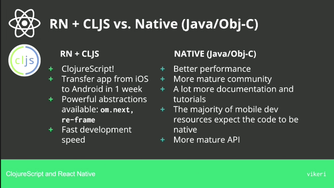
Isomorphic web apps with Rum
本場次為 rum 這個 ClojureScript 對於 React.js 的封裝的作者的演講，講者 tonsky 同時也是許多知名 Clojure/Script 函式庫專案的維護者。
tonsky 一開始介紹幾種不同在 ClojureScript 上對於 React.js 的封裝函式庫，然後介紹自己設計 rum 的幾個動機，其中一個是更好的與 datascript 或是其他資料儲存函式庫相容。
所以基本的 rum 程式長怎樣呢?
(rum/defc label [text class] [:div.lbl {:class class} text]) (rum/mount (label "Hello" "header") js/document.body)
包含 state 的複雜點的範例則是:
(def mixin {:will-mount (fn [state] (assoc state :key (atom nil)))}) (rum/defc label < mixin [text class] ([:div.label {:class class} text]))
而 rum 也支援 serveri-side 渲染 (Om.Next 也支援囉~)，運作的流程是這樣:
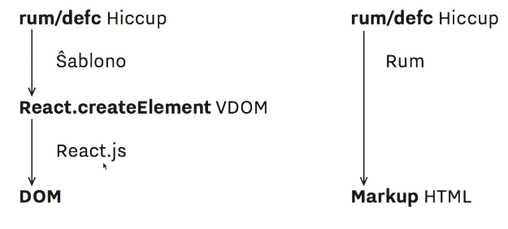
那用 rum 有什麼好處呢？講者提出了以下幾點:
- Complex single-page apps with fine control
- Custom/mixed state models
- Server-side rendering and templating
而用 rum 的壞處則是:
- Doesn't teach you how to write apps
The Story of Sir Owl Lisp
Doing data science with Clojure: the good, the bad, the ugly
投影片連結: 線上看
Easy things should be easy and hard things should be possible.
– L. Wall
老實說我聽不太懂講者在講什麼….. Orz…
不過講者提到一個他寫的函式庫:
然後…我還是聽不懂，所以只好把他 quote 的名言秀一下了 orz…
This is possibly Clojure's most important property: the syntax expresses the code's semantic layers. An experienced reader of Clojure can skip over most of the code and have a lossless understanding of its highlevel intent.
– Z.Tellman, Elements of Clojure
接下來講者稍微提到了 clojure.spec 這個預計要在 Clojure 1.9 加入的函式庫，可以減少查找問題的時間，以及 gorilla-repl 這種類似 ipython notebook 的工具。
在後面，講者終於講到前面他說的函式庫 huri， 你可以透過他在 gorilla-repl 上畫圖。
Interactive Clojure code snippets in any web page with KLIPSE
Distributed transducers
投影片連結: 點我下載
本篇講述講者實作分佈式版的 fold 函式，並透過 AWS lambda 來加速運作。
講者提供了一個查找類似詞的函式來描述整個要解決問題的狀況:
(defn similar-words-1 [word words min-distance] (->> words (map (partial levensthein-distance word)) (filter (fn [[d _]] (<= d min-distance))) (reduce group-by-distance {}))) (similar-words-1 "word" ["sword" "lord" "card" "cat"] 2) ;; => {1 #{"sword" "lord"}, 2 #{"card"}}
當然我們可以把這樣的程式改用 transducer 改寫，來提昇程式的效能
(defn similar-words-2 [word words min-distance] (transduce (comp (map (partial levensthein-distance word)) (filter (fn [[d _]] (<= d min-distance)))) group-by-distance words))
但是這樣的程式無法並行運算，因此我們再用 fold 來改寫
(defn similar-words-3 [word words min-distance] (r/fold (partial merge-with concat) group-by-distance (r/folder words (comp (map (partial levensthein-distance word)) (filter (fn [[d _]] (<= d min-distance)))))))
不過有一個問題，fold 會同時執行兩個函式，一個用來執行 reduce，稱為 reducing function ，另外一個則是用來合併結果，稱為 combining function ，而 reducing function 會並行的執行。(參考資料)
fold uses two functions: a "reducing" function, which it calls as a regular reduce across segments of the input collection, and a "combining" function, which combines the results of these reductions.
因此我們可以再把這個程式改寫
(defn similar-words-4 [word words min-distance] (r/fold (partial merge-with concat) ((comp (map (partial levensthein-distance word)) (filter (fn [[d _]] (<= d min-distance)))) group-by-distance) words))
這樣改寫後，效果好多了，但是還有最後一個問題: 並行化的 fold 只能運作在 non-lazy sequence 上，於是再加一些手腳。
(defn similar-words-5 [word words min-distance] (r/fold (partial merge-with concat) ((comp (map (partial levensthein-distance word)) (filter (fn [[d _]] (<= d min-distance)))) group-by-distance) (vec words)))
跑出來的結果如下，在講者的 HP zBook 筆電 (i7 雙核)上執行的結果是這樣的
- 一般版本: ~175 s
- Transducer: ~170 s
- Parallel fold: ~108 s
做完這些測試後，講者想到了，是否分佈式的 fold 可以提供更好的效能?
講者選用了 AWS Lambda 以及 Amazon SQS 來進行這個測試，整體的架構是這個樣子的:
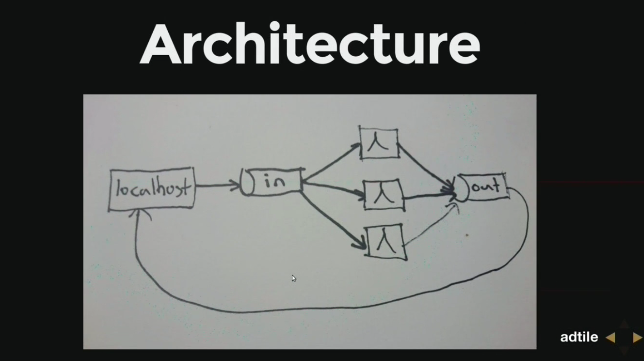
接下來你要在你的 project.clj 加入以下這些設定
:plugins [[lein-clj-lambda "0.5.1"]] :lambda {"demo" [{:handler "distributed-transducers-poc.LambdaFn" :memory-size 1536 :timeout 300 :function-name "distributed-transducers-poc" :region "eu-west-1" :policy-statements [{:Effect "Allow" :Action ["sqs:*"] :Resource ["arn:aws:sqs:eu-west-1:*"]}] :s3 {:bucket "mhjort-distributed-transducers-poc" :object-key "lambda.jar"}}]}
然後使用下面命令進行 deploy
lein lambda install demo
講者給出了範例，示範用 fold 以及 dfold 執行程式的狀況
(ns distributed-transducers-poc.demo (:require [distributed-transducers-ppc.rc :refer [dfold]] [clojure.core.reducers :as r])) (r/fold + ((map inc) +) (range 100000)) (dfold + ((map inc) +) (range 100000) 2) ; <= 2 is how many instance you run
那… 哪些資料會被送到 SQS 呢?
- 要被執行的東西 (Chunk of items to be processed)
- Reduct function
而在最後，使用分佈式 fold 的程式會變成這樣
(defn similar-words-6 [word words min-distance] (dfold (partial merge-with concat) ((comp (map (partial levensthein-distance word)) (filter (fn [[d _]] (<= d min-distance)))) group-by-distance) (vec words) 10))
而最後整體測試結果則是:
- 筆電 (一般): ~175 s
- 筆電 (transducer): ~170 s
- 筆電 (parallel fold): ~108 s
- AWS Lambda (10 nodes, cost 0.01 $): ~40 s
- AWS Lambda (20 nodes, cost 0.02 $): ~28 s
Introduction to clojure.spec - Arne Brasseur
講者為 LambdaIsland 的維護者，該網站提供了一系列的 Clojure/ClojureScript 教學，若有興趣的話可以付費訂閱。
clojure.spec 是 Clojure 預計在 1.9 版加入的新功能，對於 Clojure 這種動態型別語言而言，雖然容易開發，但是一旦你傳送給函式的型別不對，就很可能造成除錯不易。
在 clojure.spec 出現之前，比較有名的型別檢查是 core.typed 以及 schema ，而 clojure.spec 將會成為 buildin 在 Clojure 的一部分函式。
clojure.spec 的加入並不會導致程式執行變慢，用到他的時間只有在開發時使用 REPL 以及編譯的時候，所以到底要怎樣用呢？
如果你是 leinigen 的用戶，更改你的 project.clj 成如下
(defperoject myproject "0.1.0-SNAPAHOT" :dependencies [[org.clojure/clojure "1.9.0-alpha13"]])
boot 的用戶則是在你的 build.boot 加入
(set-env! :dependencies '[[org.clojure/clojure "1.9.0-alpha13"]])
於是讓我們開始使用 clojure.spec 吧! 講者假設現在有一個機器人主廚 (Robot Chef) 正在弄一份菜單 (recipes)，而這份菜單內容是這樣的:
(def tomato-sauce-recipe {:robochef/ingredients [250 :g "peeled tomatoes" 3 :clove "garlic" 5 :g "pepper"] :robochef/steps ["heat a pan" "throw everything in" "stir"]})
像這種透過 / (slash) 組成的 keyword (關鍵字)，我們稱呼為 namespace keyword
:grettings/kittos ;; => :grettings/kittos
為何要用 namespace keyword 呢？一個原因是可以避免到名稱衝突，所以我們可以把所有的 keyword 合併在同一個 map 中
{:http/method :get :robochef/method :stir}
實際上在 Clojure 中，變數也是包含在 namespace 中的
(ns robochef.core) (def ingredents {,,,}) :robochef.core/ingredients ;; => :robochef.core/ingredients ::ingredients ;; => :robochef.core/ingredients
也因此，在一個 map 中使用 namespace 作為 prefix 是很常見的
{:robochef/recipe-name "..." :robochef/ingredients [,,,] :robochef/steps [,,,] :robochef/cooking-time 30}
而在 Clojure 1.9 中，將會有新的語法可以把上面的東西變成這樣
(def recipe #:robochef{:recipes-name "" :ingredients [,,,] :steps [,,,] :cooking-time 30}) (let [{:robochef/keys [steps serves]} recipe] (doseq [s steps] ,,,))
在了解這些前置訊息後，我們終於可以來到 clojure.spec 了，首先我們把 clojure.spec 的命名空間(namespace) 指定為 s ，接下來我們加入以下這些 spec，這會將這些 spec 加入到全域去 (global registry)
(ns robochef.core (:require [clojure.spec :as s])) ;; keep in mind ::recipe == :robochef.core/recipe (s/def ::recipe (s/keys :req [::ingredients] :opt [::steps])) (s/def ::ingredients (s/* (s/cat :amount number? :unit keyword? :name string?))) (s/def ::steps ,,,)
好了後，我們就可以這樣去驗證，符合 spec 的狀況是這樣的
(s/valid? ::robochef/ingredients [5 :g "tea"]) ;; => true (s/conform :robochef/ingredients [5 :g "tea"]) ;; [{:amount 5, :unit :g, :name "tea"}]
那錯誤的情況呢? 我們可以透過 clojure.spec/explain 來幫我們找出狀況
(s/valid? ::robochef/ingredients ["10" :g "tea"]) ;; => false (s/conform :robochef/ingredients ["10" :g "tea"]) ;; => :clojure.spec/invalid (s/explain :robochef/ingredients ["10" :g "tea"]) ;; In: [0] val: "10" fails spec: ;; :robochef/ingredients at: [:amount] predicate: number?
我們也可以用 generator 去產生符合數量並可以通過測試的結果
(s/exercise :robochef/ingredients 2) ;; ([() []] ;; [(0 :Hi "0") [{:amount 0, :unit :Hi, :name "0"}]])
更多的內容我還在消化中，就請看影片吧 ~
後面演講則稍微提到一下 test.check 這個測試用的函式庫。
Clojure of Things
The Next Five Years of ClojureScript
這場是目前 ClojureScript 主要維護者 David Nolen 環顧了過去幾年 ClojureScript 開始開發的狀況，以及未來的情況。
在這場演講後半段也提及到如何參與 ClojureScript 推廣/開發等議題，也有人提問 David Nolen 對於 WebAssembly 的看法等等。
這場演講我覺的蠻不錯的，很喜歡這種有講故事風格的演講。